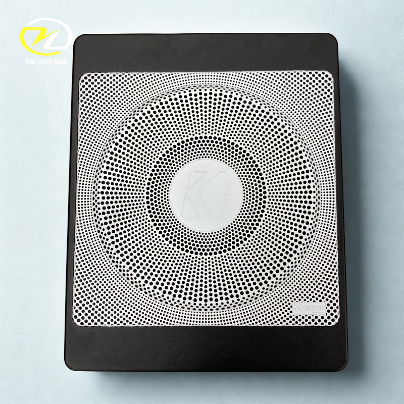
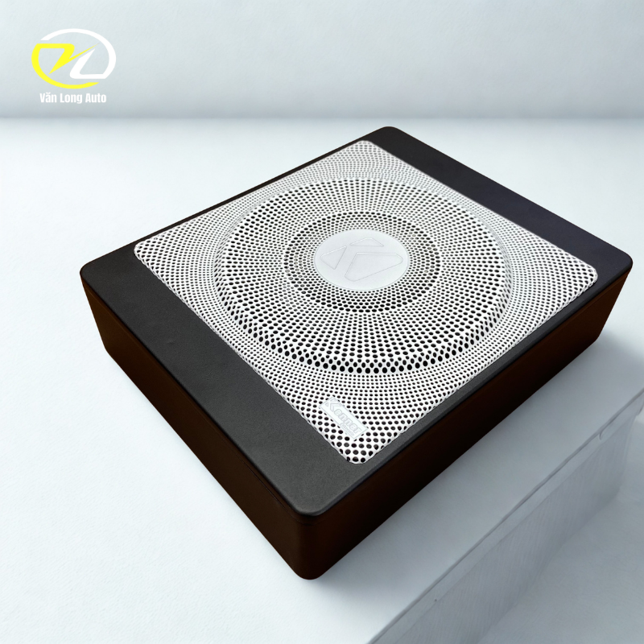
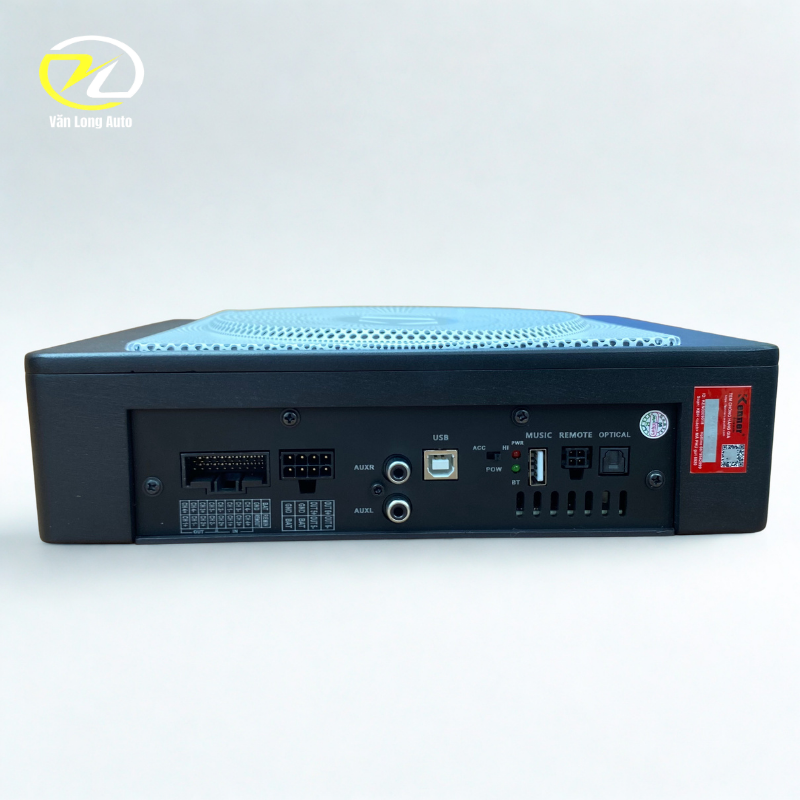

Tổng quan Kenner K8 Supper One New 2026
Kenner K8 được giới thiệu theo hướng tích hợp nhiều thành phần trong một hệ thống: loa trầm siêu mỏng, DSP và bộ khuếch đại. Cấu hình này giúp việc bố trí thiết bị trên xe gọn hơn và tạo thêm khả năng xử lý tín hiệu khi nâng cấp âm thanh.

DSP 6.1 kênh và amply 6 kênh tích hợp
Theo thông tin sản phẩm, hệ thống sử dụng DSP 6.1 kênh kết hợp bộ khuếch đại 6 kênh. Công suất đầu ra được công bố ở mức RMS 60W × 6 tại trở kháng 4Ω, giúp hỗ trợ nhiều vị trí loa trong cùng một cấu hình.

Bổ sung dải trầm và hiệu ứng sân khấu phía trước
Hệ thống được thiết kế để tăng cường dải tần thấp cho xe. Ngoài phần loa trầm, trang sản phẩm còn giới thiệu thêm hai loa mid công suất 60W độc lập nhằm bổ sung dải trung và tạo cảm giác sân khấu âm thanh ở khu vực táp-lô.

Kết nối và bố trí gọn gàng
Nhà cung cấp mô tả sản phẩm có hỗ trợ Bluetooth và bố trí các cổng kết nối theo hướng thuận tiện cho thi công. Khi lắp tại Văn Long Auto, kỹ thuật viên sẽ kiểm tra hệ thống nguyên bản và lựa chọn phương án dây dẫn phù hợp với từng xe.
Lắp đặt & tư vấn cấu hình
Một hệ thống tích hợp DSP và amply cần được kiểm tra kỹ về nguồn điện, tín hiệu đầu vào và cấu hình loa trước khi lắp.
- Kiểm tra hệ thống âm thanh nguyên bản của xe.
- Xác định tín hiệu đầu vào phù hợp trước khi đấu nối.
- Đi dây gọn gàng, ưu tiên an toàn hệ thống điện.
- Cân chỉnh DSP theo vị trí loa và gu nghe nhạc.